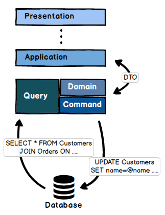

<!DOCTYPE html>
<html>
<head><meta name="generator" content="Hexo 3.8.0">
  <meta charset="utf-8">
  <title>初試 Dapper | The name is Alex</title>
  <meta name="viewport" content="width=device-width,initial-scale=1,maximum-scale=1,minimum-scale=1">
  <meta name="description" content="Dapper 做為一個 .Net 的 ORM Library 用簡單來形容他真是太適合不過了。 幾年前在寫 .Net 的程式時習慣用 Entity Framework &amp;amp; Unit of Work 的方式來包裝資料層，剛開始改用 Dapper 腦筋還有些轉不過來。但試了一下後發現，如果把效能當作第一優先考量的話(這也是我現在手上在規劃的專案的優先考量點)，Dapper真的是有無法抗拒的魅力">
<meta name="keywords" content=".net">
<meta property="og:type" content="article">
<meta property="og:title" content="初試 Dapper">
<meta property="og:url" content="http://alexpacer.github.io/posts/aef35089/index.html">
<meta property="og:site_name" content="The name is Alex">
<meta property="og:description" content="Dapper 做為一個 .Net 的 ORM Library 用簡單來形容他真是太適合不過了。 幾年前在寫 .Net 的程式時習慣用 Entity Framework &amp;amp; Unit of Work 的方式來包裝資料層，剛開始改用 Dapper 腦筋還有些轉不過來。但試了一下後發現，如果把效能當作第一優先考量的話(這也是我現在手上在規劃的專案的優先考量點)，Dapper真的是有無法抗拒的魅力">
<meta property="og:locale" content="tw">
<meta property="og:image" content="http://alexpacer.github.io/posts/aef35089/domain.png">
<meta property="og:updated_time" content="2019-10-02T03:53:13.168Z">
<meta name="twitter:card" content="summary">
<meta name="twitter:title" content="初試 Dapper">
<meta name="twitter:description" content="Dapper 做為一個 .Net 的 ORM Library 用簡單來形容他真是太適合不過了。 幾年前在寫 .Net 的程式時習慣用 Entity Framework &amp;amp; Unit of Work 的方式來包裝資料層，剛開始改用 Dapper 腦筋還有些轉不過來。但試了一下後發現，如果把效能當作第一優先考量的話(這也是我現在手上在規劃的專案的優先考量點)，Dapper真的是有無法抗拒的魅力">
<meta name="twitter:image" content="http://alexpacer.github.io/posts/aef35089/domain.png">
  <link rel="icon" href="/favicon.ico">
  

  <link rel="stylesheet" href="https://cdnjs.cloudflare.com/ajax/libs/bulma/0.6.1/css/bulma.min.css">
  <link rel="stylesheet" href="https://maxcdn.bootstrapcdn.com/font-awesome/4.7.0/css/font-awesome.min.css">
  <link rel="stylesheet" href="/css/style.css">
  
    <link rel="stylesheet" href="/css/prism.css">
  
  
<script type="application/ld+json">
  {
  "@context": "http://schema.org",
  "@type": "BlogPosting",
  "headline": "初試 Dapper",
  "name": "初試 Dapper",
  "datePublished": "2017-12-11T07:34:56.000Z",
  "dateModified": "2019-10-02T03:53:13.168Z",
  "mainEntityOfPage": {
    "@type": "WebPage",
    "@id": "http://alexpacer.github.io/posts/aef35089/index.html"
  },
  "author": {
    "@type": "Person",
    "name": "Alex Wei",
    "image": "/images/avatar.jpg"
  },
  "publisher": {
    "@type": "Organization",
    "name": "Alex Wei",
    "logo": {
      "@type": "ImageObject",
      "url": "/images/avatar.jpg"
    }
  }
}
</script>

  
  
    <script src="/js/prism.js"></script>
  
  <!-- <link href="/css/prism.css" rel="stylesheet" /> -->
  <link href="/css/prism-line-numbers.css" rel="stylesheet">
<link rel="stylesheet" href="/css/prism-twilight.css" type="text/css"></head>
</html>
<body>
  

  <header class="navbar" role="navigation" aria-label="main navigation">
  <div class="navbar-brand">
    <a href="/" class="navbar-item">
      The name is Alex
    </a>
  </div>
</header>

  <div class="container">
    <div class="columns">
      <div class="main column is-8">
        <article class="post">
  <figure class="post-thumbnail">
    

  </figure>
  <span>2017-12-11
</span>
  <h1 class="title">初試 Dapper</h1>
  
  <div class="tags">
    
      <a class="tag" href="/tags/net/">.net</a>
    
  </div>


  <div class="content">
    <p><a href="https://stackexchange.github.io/Dapper/" target="_blank" rel="noopener">Dapper</a> 做為一個 .Net 的 ORM Library 用<strong>簡單</strong>來形容他真是太適合不過了。</p>
<p>幾年前在寫 .Net 的程式時習慣用 Entity Framework &amp; Unit of Work 的方式來包裝資料層，剛開始改用 Dapper 腦筋還有些轉不過來。但試了一下後發現，如果把效能當作第一優先考量的話(這也是我現在手上在規劃的專案的優先考量點)，Dapper真的是有無法抗拒的魅力。</p>
<p>Dapper 所帶來的優點這邊就不贅述了，這邊要談的是，使用 Dapper 做資料底層的時候，我想到的一些事：</p>
<ul>
<li>Unit Of Work (UOW) 怎麼做呢？</li>
<li>要怎麼做可單元測試的資料底層？</li>
<li>使用時所思考過的事</li>
</ul>
<h3 id="Unit-of-Work"><a href="#Unit-of-Work" class="headerlink" title="Unit of Work?"></a>Unit of Work?</h3><p>原本使用 Entity Framework 的習慣是建立一個 MyDbContext 物件去繼承 DbContext 物件，然後在裡面定義</p>
<pre class=" language-csharp"><code class="language-csharp"><span class="token keyword">public</span> <span class="token keyword">virtual</span> IDbSet <span class="token punctuation">{</span> <span class="token keyword">get</span><span class="token punctuation">;</span> <span class="token keyword">set</span><span class="token punctuation">;</span> <span class="token punctuation">}</span>
</code></pre>
<p>等屬性代表 DB 裡的資料(表)。</p>
<p>用 Dapper 後，因為直接使用 <code>SqlConnection</code> 連線，連線管理相對變得單純，在網路上拜讀了 <strong>Joe Sauve</strong> 的一篇文章 <a href="http://www.joesauve.com/async-dapper-and-async-sql-connection-management/" target="_blank" rel="noopener">Async Dapper with async SQL connection management</a>。發現他所提供的作法非常的乾淨簡潔，照著他的建議實做了自己的程式：</p>
<p>這邊做了一個抽象的 Base Repository <code>RepositoryBase</code> 做出包含處理連線資料庫的 Method。</p>
<pre class=" language-csharp"><code class="language-csharp"><span class="token keyword">public</span> <span class="token keyword">abstract</span> <span class="token keyword">class</span> <span class="token class-name">RepositoryBase</span>
<span class="token punctuation">{</span>
    <span class="token keyword">protected</span> DbConnectionFactory DbConnectionFactory<span class="token punctuation">;</span>

    <span class="token keyword">protected</span> <span class="token function">RepoBase</span><span class="token punctuation">(</span>DbConnectionFactory connectionFactory<span class="token punctuation">)</span>
    <span class="token punctuation">{</span>
        DbConnectionFactory <span class="token operator">=</span> connectionFactory<span class="token punctuation">;</span>
    <span class="token punctuation">}</span>

    <span class="token comment" spellcheck="true">///</span>
    <span class="token comment" spellcheck="true">/// 這 Method 就是 Joe 所建議的 Async 模式，詳情可以參考 Joe 的 Blog</span>
    <span class="token comment" spellcheck="true">/// [Async Dapper with async SQL connection management](http://www.joesauve.com/async-dapper-and-async-sql-connection-management/)</span>
    <span class="token comment" spellcheck="true">///</span>
    <span class="token keyword">protected</span> <span class="token keyword">async</span> Task <span class="token function">WithConnectionAsync</span><span class="token punctuation">(</span>Func dbOperation<span class="token punctuation">)</span>
    <span class="token punctuation">{</span>
        <span class="token keyword">try</span> <span class="token punctuation">{</span>
            <span class="token keyword">using</span> <span class="token punctuation">(</span><span class="token keyword">var</span> connection <span class="token operator">=</span> DbConnectionFactory<span class="token punctuation">.</span><span class="token function">GetSqlDbConnection</span><span class="token punctuation">(</span><span class="token punctuation">)</span><span class="token punctuation">)</span> <span class="token punctuation">{</span>
                <span class="token keyword">await</span> connection<span class="token punctuation">.</span><span class="token function">OpenAsync</span><span class="token punctuation">(</span><span class="token punctuation">)</span><span class="token punctuation">;</span>
                <span class="token comment" spellcheck="true">// Asynchronously open a connection to the database</span>
                <span class="token keyword">return</span> <span class="token keyword">await</span> <span class="token function">dbOperation</span><span class="token punctuation">(</span>connection<span class="token punctuation">)</span><span class="token punctuation">;</span> 

                <span class="token comment" spellcheck="true">// Asynchronously execute getData, which has been passed in as a Func</span>
            <span class="token punctuation">}</span>
        <span class="token punctuation">}</span> <span class="token keyword">catch</span> <span class="token punctuation">(</span><span class="token class-name">TimeoutException</span> ex<span class="token punctuation">)</span> <span class="token punctuation">{</span>
            <span class="token keyword">throw</span> <span class="token keyword">new</span> <span class="token class-name">Exception</span><span class="token punctuation">(</span>String<span class="token punctuation">.</span><span class="token function">Format</span><span class="token punctuation">(</span> <span class="token string">"{0}.WithConnectionAsync() experienced a SQL timeout"</span><span class="token punctuation">,</span> <span class="token function">GetType</span><span class="token punctuation">(</span><span class="token punctuation">)</span><span class="token punctuation">.</span>FullName<span class="token punctuation">)</span><span class="token punctuation">,</span> ex<span class="token punctuation">)</span><span class="token punctuation">;</span>
        <span class="token punctuation">}</span> <span class="token keyword">catch</span> <span class="token punctuation">(</span><span class="token class-name">SqlException</span> ex<span class="token punctuation">)</span> <span class="token punctuation">{</span>
            <span class="token keyword">throw</span> <span class="token keyword">new</span> <span class="token class-name">Exception</span><span class="token punctuation">(</span>String<span class="token punctuation">.</span><span class="token function">Format</span><span class="token punctuation">(</span> <span class="token string">"{0}.WithConnectionAsync() experienced a SQL exception (not a timeout)"</span><span class="token punctuation">,</span> <span class="token function">GetType</span><span class="token punctuation">(</span><span class="token punctuation">)</span><span class="token punctuation">.</span>FullName<span class="token punctuation">)</span><span class="token punctuation">,</span> ex<span class="token punctuation">)</span><span class="token punctuation">;</span>
        <span class="token punctuation">}</span>
    <span class="token punctuation">}</span>
<span class="token punctuation">}</span>
</code></pre>
<p>Joe 的這個做法，漂亮的地方在於；這樣的做法簡單的把 開啟連線，Try/Catch 都集中在一個地方處理。實做這個 abstract class 時只需要把需要執行的 .Execute() .Query() 包在 <code>async connection =&amp;gt; { }</code> 裡就好。</p>
<p>更棒的是這個方式同樣照顧到需要寫非同步處理的需要！</p>
<p>下面是一個繼承實做 RepositoryBase 的 class <code>CustomerRepository</code>。</p>
<pre class=" language-csharp"><code class="language-csharp"><span class="token keyword">public</span> <span class="token keyword">class</span> <span class="token class-name">CustomerRepository</span> <span class="token punctuation">:</span> RepositoryBase<span class="token punctuation">,</span> ICustomerRepository
<span class="token punctuation">{</span>
    <span class="token keyword">public</span> <span class="token function">CustomerRepository</span><span class="token punctuation">(</span>DbConnectionFactory conn<span class="token punctuation">)</span> <span class="token punctuation">:</span> <span class="token keyword">base</span><span class="token punctuation">(</span>conn<span class="token punctuation">)</span>
    <span class="token punctuation">{</span>
    <span class="token punctuation">}</span>

    <span class="token comment" spellcheck="true">// .... 與 Customer 有關的 Method 可放在這裡，</span>
    <span class="token comment" spellcheck="true">// 比如說 CreateCustomer(), CreateAddress()</span>
    <span class="token comment" spellcheck="true">// 這些新增可能都會跨好幾個表格</span>

    <span class="token comment" spellcheck="true">// 像這個新增 Customer</span>
    <span class="token keyword">async</span> Task ICustomerRepository<span class="token punctuation">.</span><span class="token function">CreateCustomerAsync</span><span class="token punctuation">(</span>Customer customer<span class="token punctuation">)</span>
    <span class="token punctuation">{</span>
        <span class="token keyword">var</span> customerId <span class="token operator">=</span> Guid<span class="token punctuation">.</span><span class="token function">NewGuid</span><span class="token punctuation">(</span><span class="token punctuation">)</span><span class="token punctuation">;</span>

        <span class="token keyword">return</span> <span class="token keyword">await</span> <span class="token function">WithConnectionAsync</span><span class="token punctuation">(</span><span class="token keyword">async</span> c <span class="token operator">=</span><span class="token operator">></span> <span class="token punctuation">{</span>
            <span class="token keyword">using</span><span class="token punctuation">(</span><span class="token keyword">var</span> t <span class="token operator">=</span> t<span class="token punctuation">.</span><span class="token function">BeginTransaction</span><span class="token punctuation">(</span><span class="token punctuation">)</span><span class="token punctuation">)</span><span class="token punctuation">{</span>

                <span class="token comment" spellcheck="true">// 建立 Customer 資料</span>
                c<span class="token punctuation">.</span><span class="token function">Execute</span><span class="token punctuation">(</span><span class="token string">@"INSERT INTO Customers (Id, Name) VALUES(@Id, @CustomerName)"</span><span class="token punctuation">,</span>
                        <span class="token keyword">new</span> <span class="token punctuation">{</span>
                            Id <span class="token operator">=</span> customerId
                            AddressText <span class="token operator">=</span> customer<span class="token punctuation">.</span>name
                        <span class="token punctuation">}</span><span class="token punctuation">,</span> transaction<span class="token punctuation">:</span> t<span class="token punctuation">)</span><span class="token punctuation">;</span>

                <span class="token comment" spellcheck="true">// 住址。這邊假設 Customer 關連到多筆住址</span>
                c<span class="token punctuation">.</span><span class="token function">Execute</span><span class="token punctuation">(</span><span class="token string">@"INSERT INTO Addresses (Id, Name) VALUES(@AddressId, @AddressText)"</span><span class="token punctuation">,</span>
                        <span class="token keyword">new</span> <span class="token punctuation">{</span>
                            AddressId <span class="token operator">=</span> Guid<span class="token punctuation">.</span><span class="token function">NewGuid</span><span class="token punctuation">(</span><span class="token punctuation">)</span><span class="token punctuation">,</span>
                            AddressText <span class="token operator">=</span> customer<span class="token punctuation">.</span>addressText<span class="token punctuation">,</span>
                            <span class="token punctuation">.</span><span class="token punctuation">.</span><span class="token punctuation">.</span><span class="token punctuation">.</span>
                            CustomerId <span class="token operator">=</span> customerId
                        <span class="token punctuation">}</span><span class="token punctuation">,</span> transaction<span class="token punctuation">:</span> t<span class="token punctuation">)</span><span class="token punctuation">;</span>

                <span class="token comment" spellcheck="true">// 送 DB 執行</span>
                t<span class="token punctuation">.</span><span class="token function">Commit</span><span class="token punctuation">(</span><span class="token punctuation">)</span><span class="token punctuation">;</span>
                <span class="token keyword">return</span> customerId<span class="token punctuation">;</span>
            <span class="token punctuation">}</span>
        <span class="token punctuation">}</span><span class="token punctuation">)</span><span class="token punctuation">;</span>

    <span class="token punctuation">}</span>
<span class="token punctuation">}</span>
</code></pre>
<h3 id="單元測試"><a href="#單元測試" class="headerlink" title="單元測試"></a>單元測試</h3><p>單元測試是在用了 Dapper 的時候覺得很不方便的事情。當 TSQL 都需要寫在程式或 Stored Procedure 裡，單元測試就不得不做一些變更了。</p>
<p>用 EF 可以輕鬆的 Mock 測試資料塞到 Service Class 裡來驗證商務邏輯，但 Dapper 只能真的準備一個資料庫(In Memory 或 localdb 之類的)來做類似整合測試來涵蓋底層資料存取的邏輯。</p>
<p>比起直接建一個 ICollection 當作測試資料當然是慢了點。而且並不能完整符合的單元測試的定義。但就要看使用 Dapper 要達成的主要目的的價值是否是我們要的。</p>
<h3 id="使用時所思考過的事"><a href="#使用時所思考過的事" class="headerlink" title="使用時所思考過的事"></a>使用時所思考過的事</h3><p>目前的資料庫是與 DBA 討論而一起建立起來而不像之前由 EF Code First 建起來的。我在看 Repository 就比較像是 Aggregate Root 的樣子，把一些相關的底層表格整理成一個 Repository。</p>
<p>簡單的來說，我在做底層的時候，比較需要在意的事情應該是 Domain Model 的設計。既然 Repository 被當成 Aggregate Root。以我現在正在想辦法實現的架構 (CQRS)：</p>
<p></p>
<p>Command 可能較為單純一些，把要對資料異動的幾個動作一起進去即可，但 Query 的 Method 可能就會包含整合不同 Aggregate Root 的一些 Projection。</p>
<p>但目前仍然在想說，是不是有需要把 Query 跟 Command 的 Method 拆開來寫在不同的 Repository。</p>
<p>設計決定有時候真的很難 …</p>
<hr>
<p>稍微結論一下，本篇討論了一下使用 Dapper 來做底層存取時我自己遇到與想到的一些問題：單元測試、非同步方法的實做等等。</p>
<p>手上在設計的系統會有很大流量。之前在做 CQRS 使用的是 EF 來打底，效能上沒有遇到太多 Application　造成的效能瓶頸，但 Dapper 應該還可以再讓系統跑快一點。</p>
<h3 id="References"><a href="#References" class="headerlink" title="References"></a>References</h3><ul>
<li><a href="http://www.joesauve.com/async-dapper-and-async-sql-connection-management/" target="_blank" rel="noopener">Async Dapper with async SQL connection management</a></li>
</ul>

  </div>
  
<nav class="footer-nav">
  
    <div class="footer-nav__prev">
      <div class="footer-nav__label">
        較新的那篇
      </div>
      <a href="/posts/761f59e/">
        智付通金流整合
      </a>
    </div>
  
  
    <div class="footer-nav__next">
      <div class="footer-nav__label">
        較舊的那篇
      </div>
      <a href="/posts/ffc29105/">
        單元測試
      </a>
    </div>
  
</nav>


</article>


<div id="disqus_thread"></div>


      </div>
      <div class="sidebar column is-4">
        <aside>
  
    <aside class="search widget">
  <form action="//google.com/search" method="get" accept-charset="UTF-8" class="search-form" target="_blank">
    <div class="control has-icons-right">
      <input type="search" name="q" class="input" placeholder="搜尋">
      <span class="icon is-small is-right">
        <i class="fa fa-search"></i>
      </span>
    </div>
    <input type="hidden" name="sitesearch" value="http://alexpacer.github.io">
  </form>
</aside>

  
    <div class="widget-wrap">
  <div class="widget-title">作者</div>
  <aside class="profile media widget">
    <figure class="profile-avatar media-left">
      
    </figure>
    <div class="media-content">
      <p>
        <strong>
          <span>Alex Wei</span>
          <span class="icon">
            <a href="https://github.com/alexpacer" target="_blank">
              <i class="fa fa-github"></i>
            </a>
          </span>
        </strong>
        <br>
        <span></span>
      </p>
    </div>
  </aside>
</div>

  
    
  <div class="widget-wrap">
    <div class="widget-title">最近更新</div>
    <div class="widget">
      <ul class="recent-post">
        
          <li class="recent-post-item media">
            <figure class="media-left">
              

            </figure>
            <div class="media-content">
              <p class="">
                <a href="/posts/af2d802f/" class="">
                  Actor Model - 聊聊對 Actor Model 的理解
                </a>
              </p>
              <p class="">
                <small>
                  2019-10-17

                </small>
              </p>
            </div>
          </li>
        
          <li class="recent-post-item media">
            <figure class="media-left">
              

            </figure>
            <div class="media-content">
              <p class="">
                <a href="/posts/d974dd78/" class="">
                  WebDeployment 的一些前置設定
                </a>
              </p>
              <p class="">
                <small>
                  2019-06-21

                </small>
              </p>
            </div>
          </li>
        
          <li class="recent-post-item media">
            <figure class="media-left">
              

            </figure>
            <div class="media-content">
              <p class="">
                <a href="/posts/904aaacf/" class="">
                  ASP.net Core (2.2) 整理 1 :: [Auth &amp; Authorize]
                </a>
              </p>
              <p class="">
                <small>
                  2019-02-14

                </small>
              </p>
            </div>
          </li>
        
          <li class="recent-post-item media">
            <figure class="media-left">
              

            </figure>
            <div class="media-content">
              <p class="">
                <a href="/posts/17bf5966/" class="">
                  Windows Server 安裝 RabbitMQ
                </a>
              </p>
              <p class="">
                <small>
                  2018-12-12

                </small>
              </p>
            </div>
          </li>
        
          <li class="recent-post-item media">
            <figure class="media-left">
              

            </figure>
            <div class="media-content">
              <p class="">
                <a href="/posts/ebf2f33a/" class="">
                  Redis cluster on CentOs
                </a>
              </p>
              <p class="">
                <small>
                  2018-04-27

                </small>
              </p>
            </div>
          </li>
        
      </ul>
    </div>
  </div>


  
    
  <div class="widget-wrap">
    <h3 class="widget-title">標籤雲</h3>
    <div class="widget">
      <a href="/tags/net/" style="font-size: 10px;">.net</a> <a href="/tags/IIS/" style="font-size: 10px;">IIS</a> <a href="/tags/WebDeploy/" style="font-size: 10px;">WebDeploy</a> <a href="/tags/actor-model/" style="font-size: 10px;">actor-model</a> <a href="/tags/asp-net-core/" style="font-size: 10px;">asp.net-core</a> <a href="/tags/elk/" style="font-size: 10px;">elk</a> <a href="/tags/nginx/" style="font-size: 10px;">nginx</a> <a href="/tags/rabbit-mq/" style="font-size: 10px;">rabbit-mq</a> <a href="/tags/rails/" style="font-size: 20px;">rails</a> <a href="/tags/redis/" style="font-size: 10px;">redis</a> <a href="/tags/ruby/" style="font-size: 10px;">ruby</a> <a href="/tags/unit-testing/" style="font-size: 10px;">unit-testing</a> <a href="/tags/windows/" style="font-size: 10px;">windows</a>
    </div>
  </div>


  
    
  <div class="widget-wrap">
    <h3 class="widget-title">封存</h3>
    <div class="widget">
      <ul class="archive-list"><li class="archive-list-item"><a class="archive-list-link" href="/archives/2019/10/">October 2019</a><span class="archive-list-count">1</span></li><li class="archive-list-item"><a class="archive-list-link" href="/archives/2019/06/">June 2019</a><span class="archive-list-count">1</span></li><li class="archive-list-item"><a class="archive-list-link" href="/archives/2019/02/">February 2019</a><span class="archive-list-count">1</span></li><li class="archive-list-item"><a class="archive-list-link" href="/archives/2018/12/">December 2018</a><span class="archive-list-count">1</span></li><li class="archive-list-item"><a class="archive-list-link" href="/archives/2018/04/">April 2018</a><span class="archive-list-count">1</span></li><li class="archive-list-item"><a class="archive-list-link" href="/archives/2017/12/">December 2017</a><span class="archive-list-count">2</span></li><li class="archive-list-item"><a class="archive-list-link" href="/archives/2017/06/">June 2017</a><span class="archive-list-count">4</span></li></ul>
    </div>
  </div>


  
    <div class="widget-wrap">
    <h3 class="widget-title">連結</h3>
    <div class="widget">
        <ul style="list-style: circle">
            <li>
                <a href="https://blog.ryantseng.me/" class="">
                    Ryan - 不務正業 全端 開發記事
                </a>
            </li>

            <li>
                <a href="https://eugenesu0515.github.io/Blog/" class="">
                    Eugene
                </a>
            </li>
        </ul>
    </div>
</div>

  
</aside>

      </div>
    </div>
  </div>
  <footer class="footer">
  <div class="container">
    <div class="content has-text-centered">
      <p>
        <a rel="license" href="http://creativecommons.org/licenses/by-nc/4.0/"></a><br>This blog is licensed under a <a rel="license" href="http://creativecommons.org/licenses/by-nc/4.0/">Creative Commons Attribution-NonCommercial 4.0 International License</a>.


        <!--
          <br />
          <span xmlns:cc="http://creativecommons.org/ns#" property="cc:attributionName">Alex Wei</span>'s Workを著作者とするこの作品は<a rel="license" href="http://creativecommons.org/licenses/by-sa/4.0/">クリエイティブ・コモンズの 表示 - 継承 4.0 国際 ライセンス</a>で提供されています。 -->
      </p>
    </div>
  </div>
</footer>


  <script>
    var disqus_shortname = 'the-name-is-alex';
    
    var disqus_url = 'http://alexpacer.github.io/posts/aef35089/';
    
    (function(){
      var dsq = document.createElement('script');
      dsq.type = 'text/javascript';
      dsq.async = true;
      dsq.src = '//go.disqus.com/embed.js';
      (document.getElementsByTagName('head')[0] || document.getElementsByTagName('body')[0]).appendChild(dsq);
    })();
  </script>


  
</body>
</html>
